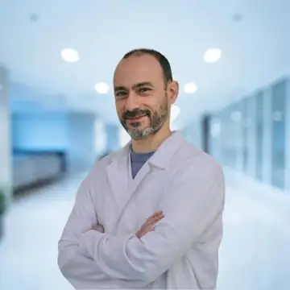
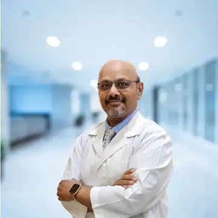

Dr. Afnan Mashal
General Dentist
Corniche locationGeneral dental care and treatment planning.
View profile →Medical team
Search our Abu Dhabi dental team by name or specialty.
General Dentist
Corniche locationGeneral dental care and treatment planning.
View profile →
General Dentist
Al Raha locationGeneral dental care and patient-centred treatment planning.
View profile →General Dentist
Al Raha locationGeneral dental care and routine treatment planning.
View profile →General Dentist
Al Raha locationGeneral dental care and routine treatment planning.
View profile →General Dentist
Corniche locationGeneral dental care and routine treatment planning.
View profile →General Dentist
Corniche locationPreventive, restorative and esthetic dentistry with patient-centred care.
View profile →
Specialist Prosthodontist & Implantologist
Both locationsImplantology, full-mouth rehabilitation and CAD/CAM aesthetic dentistry.
View profile →
Endodontist
Corniche locationEndodontic diagnosis and root canal care.
View profile →
Periodontist & Implantologist
Corniche locationPeriodontal care, gum health and implantology.
View profile →
Orthodontist
Corniche locationOrthodontic care for alignment and bite correction.
View profile →
Consultant Orthodontist
Corniche locationConsultant-led orthodontic assessment and treatment.
View profile →
Orthodontist
Both locationsOrthodontic care and treatment planning.
View profile →Pediatric Dentist
Al Raha locationDental care for children and adolescents.
View profile →Periodontist & Implantologist
Al Raha locationPeriodontal care, gum health and implantology.
View profile →No doctors match your current search. Try a different name or specialty.
Tell us what you need help with and reception can point you to the right dentist or specialist.